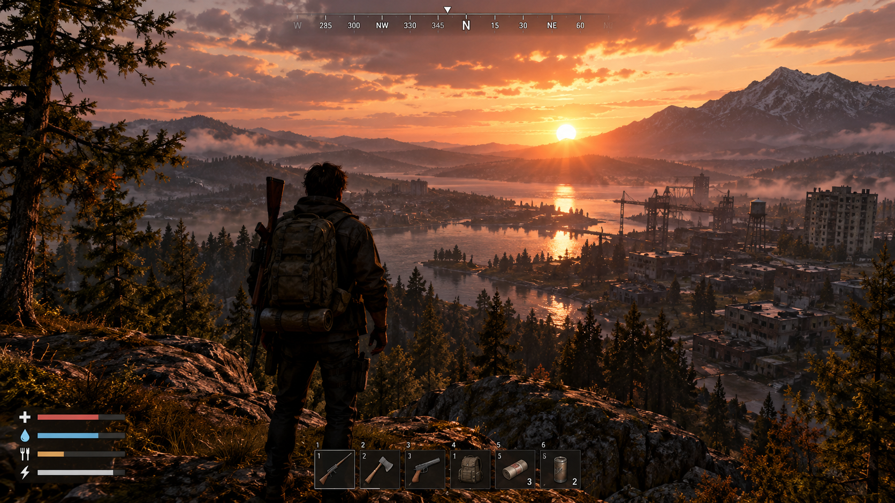
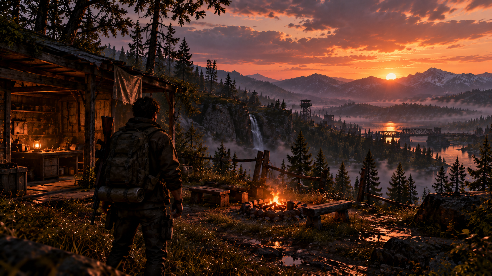
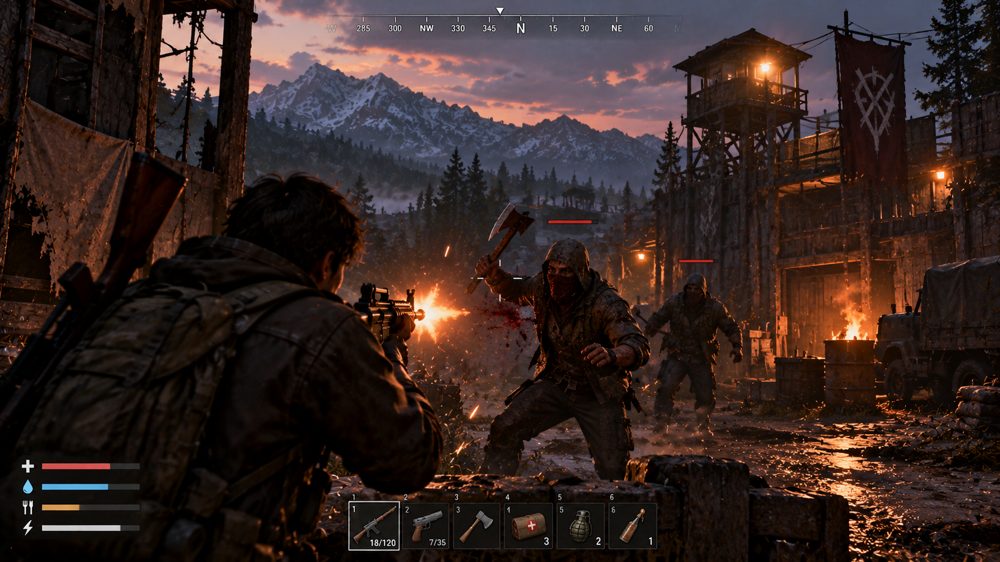

Выживи там, где остановилось время.
Мир пал. То, что раньше было шумным мегаполисом, превратилось в радиоактивную пустошь, где каждый вдох может стать последним. Ты — командир "Последнего форпоста", крошечного островка безопасности в океане хаоса.
Твоя задача — не просто выжить, а вернуть человечеству надежду. Строй укрепления, отправляй отряды на поиски припасов, отражай атаки мутантов и принимай решения, от которых зависят жизни выживших. Здесь нет места жалости. Только ты, твои люди и бесконечная пустошь
Особенности →
- Жесткое выживание
- Тактические сражения
- Строительство и крафт
- Живой мир
Каждый патрон и банка тушенки на счету. Управляй ресурсами, строй фильтры для воды и следи за радиационным фоном. Ошибка стоит жизни
Не просто стреляй. Используй укрытия, ловушки и окружающую среду. Отправляй отряды в рискованные рейды на руины городов, чтобы добыть уникальное снаряжение.
Восстанови форпост из руин. Возводи стены, турели и лаборатории. Создавай оружие и броню из того, что удалось найти в пустоши.
Погодные условия, радиактивные бури и ночные хищники - все это влияет на геймплей. Ты не сможешь победить пустошь, ты можешь только научится в ней жить.


